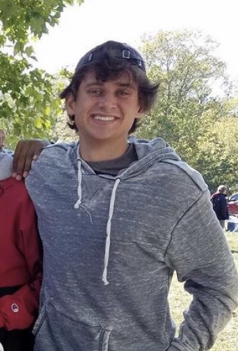
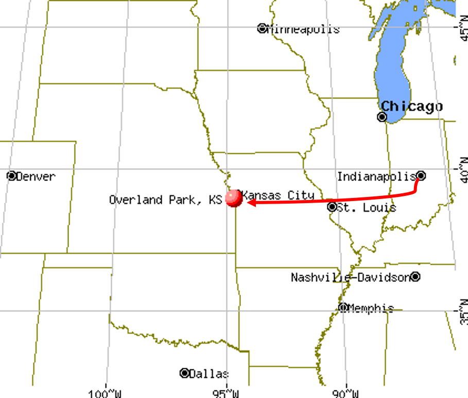

  Hi there! Welcome to my website, all about myself: Gabriel Matthew Whitehair. Though I was born in Indianapolis, IN, I have lived and grown up in Overland Park, KS since I was two. Overland Park is a large suburb of Kansas City, MO on the Kansas side of the state line.
I came to IU because of the Kelley School of Business and because I was already familiar with the state of Indiana. My dad works for Eli Lilly which is headquartered in Indianapolis so that influenced my decision to come here as well.
In high school, I was the varsity golf captain. We won state my sophomore year of high school and placed second the next two years. I was the treasurer of National Honor Society and I was voted Most Likely to be President
by my pears. I was involved in Boys' State, Overland Park Teen City Council, Math National Honor Society, Future Business Leaders of America, and have over 100 hours of community service. My past work experience includes an internship for Students for Congressman Kevin Yoder, Life Time Fitness, and a garden tilling business I started with my brothers. Here at Indiana, I am involved in the Indiana University Golf Club, Tee Off at Kelley, and the Real Estate Club. I plan to get more involved in the future.
Below are some of my projects & resume.